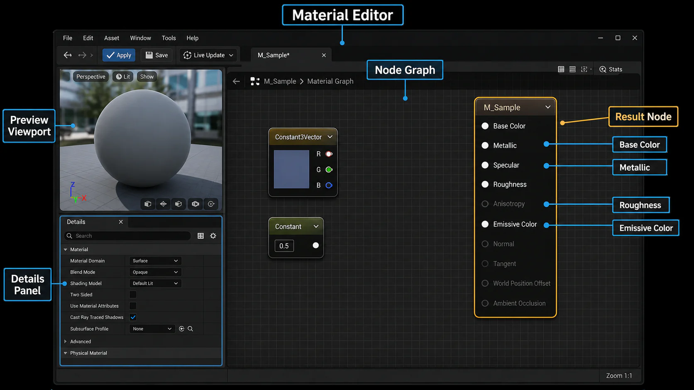
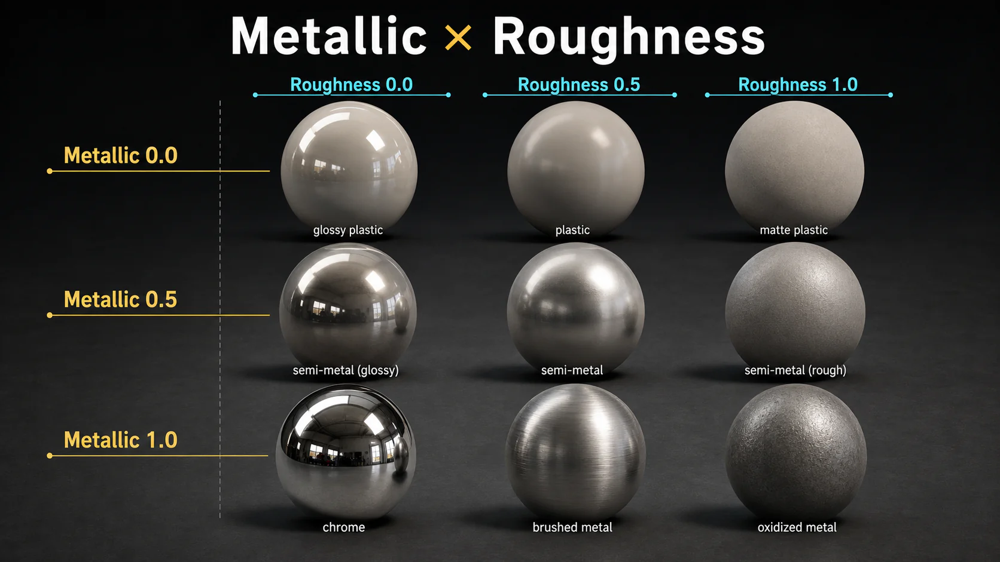
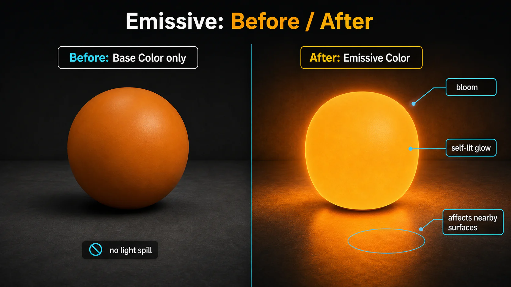

3주차 1교시 — 머테리얼 시스템 기초 + PBR (학생용)
관련 문서
| 관계 | 문서 |
|---|---|
| 강의 계획서 | 강의계획서: Game Engine II |
- 머테리얼 에디터에서 직접 머테리얼을 생성하고 편집할 수 있다
- PBR 핵심 속성 5가지(Base Color, Metallic, Roughness, Specular, Emissive)의 역할을 이해할 수 있다
- Metallic과 Roughness 값 조합으로 원하는 표면 느낌을 조절할 수 있다
도입
뷰포트에 큐브, 스피어 같은 오브젝트가 놓여 있지만 모두 회색입니다. 실시간 콘텐츠를 만들려면 이 밋밋한 회색 오브젝트에 색과 질감을 입혀야 합니다. 지금까지 배치만 했던 오브젝트에 재질을 입히는 것이 시네마틱 영상 제작의 핵심입니다. 오늘부터 머테리얼을 배우며 오브젝트에 색을 입혀봅니다.
머테리얼이란?
머테리얼은 스태틱 메쉬의 재질을 결정합니다. 쉽게 말해 3D 모델에 색, 질감과 같은 시각적 특징을 입히는 페인트입니다. 3D 모델의 형태가 뼈대라면, 머테리얼은 그 표면의 색과 질감을 정하는 레이어입니다.
학술적으로는 다음과 같이 정의합니다.
- 머테리얼(Material): 3D 객체의 표면 특성을 정의하는 셰이더 기반 시스템으로, 컴퓨터 그래픽스에서 물리 기반 렌더링(PBR, Physically Based Rendering)을 구현하는 핵심 요소
- PBR: 빛과 표면 간의 상호작용을 실제 물리 법칙에 근거해 시뮬레이션하는 렌더링 기법
- 셰이더: 오브젝트의 외관과 조명효과를 결정하는 역할
PBR이 ’어떻게 보일지’를 정의한다면, 셰이더는 ’그걸 실제로 계산하고 그리는 방법’입니다.
이번 시간이 끝나면 여러분은:
- 머테리얼 에디터에서 직접 머테리얼을 생성하고 편집할 수 있습니다.
- PBR 핵심 속성 5가지(Base Color, Metallic, Roughness, Specular, Emissive)의 역할을 이해할 수 있습니다.
- Metallic과 Roughness 값 조합으로 원하는 표면 느낌을 조절할 수 있습니다.
핵심 개념 1 — 머테리얼 생성과 에디터 인터페이스
머테리얼 폴더 만들기
머테리얼을 프로젝트마다 새로 만들면 작업이 금방 비효율적이 됩니다. 그래서 재사용할 수 있도록 폴더와 이름을 처음부터 정리해두는 것이 중요합니다.
폴더 생성 순서:
- Content Browser 좌측 상단의 초록색
+ Add버튼을 클릭합니다 - 드롭다운 메뉴 하단의 FOLDER 섹션에서
New Folder를 클릭합니다 - 경로를 확인합니다:
All > Content > Lectures > 3Weeks - 여기에
Materials라는 이름의 폴더를 생성합니다
Content Browser 상단의 경로 표시줄(breadcrumb)이 All > Content > Lectures > 3Weeks > Materials로 되어 있어야 합니다. 폴더 트리에서는 GameEngineII_2026_01 > Content > Lectures > 3Weeks > Materials 형태로 계층이 보입니다.
머테리얼 생성
이제 Materials 폴더 안에서 머테리얼을 만듭니다.
+ Add버튼 클릭- 드롭다운에서 CREATE BASIC ASSET 섹션을 봅니다. Blueprint Class, Level, Material, Niagara System 등이 있습니다
Material을 선택합니다 (지구본 모양의 초록색 아이콘)
네이밍 컨벤션
머테리얼도 이름을 변경해줍니다. 텍스트만 보고도 어떤 데이터 타입인지 알 수 있게 해야 합니다.
- 머테리얼:
M_접두사 →M_Sample - 텍스처:
T_접두사 - 머테리얼 인스턴스:
MI_접두사
Content Browser에 M_Sample이라는 이름의 머테리얼 에셋이 나타납니다. 썸네일에는 회색 구(Sphere) 프리뷰가 보입니다.
Content Browser에서 + Add를 눌러 Materials 폴더를 만들고, 그 안에 Material을 생성한 뒤 이름을 M_Sample로 바꿔보세요. 폴더 경로(Content > Lectures > 3Weeks > Materials)와 네이밍(M_Sample)이 올바른지 확인합니다.
머테리얼 에디터 열기
M_Sample을 더블클릭하면 머테리얼 에디터가 별도 창으로 열립니다. 머테리얼의 모든 것을 정의하는 별도 에디터입니다.
머테리얼 에디터는 3개 영역으로 구성됩니다:
| 영역 | 위치 | 설명 |
|---|---|---|
| 프리뷰 뷰포트 | 좌측 상단 | 현재 머테리얼이 적용된 3D 구체가 실시간으로 보입니다. 회색 구체가 기본 상태이고, 배경에 Epic 본사 건물이 HDRI로 비치고 있습니다. 노드를 수정하면 여기서 바로 결과를 확인할 수 있습니다 |
| 노드 그래프 | 우측 (가장 큰 영역) | 어두운 격자 무늬 배경 위에 노드들을 배치하고 연결하는 공간입니다. 우측에 금색 테두리의 큰 노드가 하나 있는데, 이것이 Result Node입니다. 우측 상단에 ’M_Sample > Material Graph’라고 경로가 표시됩니다 |
| 디테일 패널 | 좌측 하단 | Details와 Parameters 탭이 있습니다. Material Domain(Surface), Blend Mode(Opaque), Shading Model(Default Lit) 등 머테리얼의 전체 속성을 설정합니다 |

이미지: 머테리얼 에디터의 프리뷰 뷰포트, 노드 그래프, 디테일 패널, Result Node 구조
가운데 넓은 영역이 노드 그래프입니다. 여기서 노드를 배치하고 와이어로 연결하는 방식으로 머테리얼을 만듭니다. 코드 한 줄 없이 시각적으로 만드는 것으로, 블루프린트와 비슷한 개념입니다. 지금은 ’노드를 연결해서 만든다’는 것만 기억하면 됩니다.
노드 그래프 조작 — 기본 네비게이션:
| 조작 | 방법 |
|---|---|
| 화면 이동(Pan) | 마우스 RMB 드래그 (또는 MMB 드래그) |
| 확대/축소(Zoom) | 마우스 스크롤 휠 |
| 노드 선택 | 노드 위에서 LMB 클릭 |
| 노드 이동 | 선택 후 LMB 드래그 |
| 영역 선택 | 빈 공간에서 LMB 드래그 — 사각 범위로 여러 노드 선택 |
노드 그래프는 2D 공간이라 메인 뷰포트와 네비게이션이 다릅니다. RMB 드래그로 화면이 움직이고, 스크롤로 확대/축소됩니다.
상단 툴바:
상단 툴바에는 중요한 버튼들이 있습니다. 지금 알아야 할 것만 짚습니다:
| 버튼 | 기능 |
|---|---|
| Apply | 머테리얼을 컴파일(적용). 프리뷰에 반영 |
| Save (디스크 아이콘) | 디스크에 저장. Ctrl+S와 동일 |
| Live Update | 켜져 있으면 노드 수정 시 프리뷰가 자동 갱신 (기본 ON) |
Apply는 에디터 안에서 미리보기를 반영하는 것이고, Save는 실제 파일로 저장하는 것입니다. Apply만 하고 Save를 안 하면 다음에 열었을 때 변경사항이 사라집니다. 둘 다 해야 합니다.
M_Sample을 더블클릭해 에디터를 열고, 노드 그래프에서 RMB 드래그로 화면을 이동해보고 스크롤로 확대/축소해보세요. 우측의 금색 큰 노드가 Result Node입니다.
Result Node (결과 노드)
노드 그래프 우측의 Result Node를 자세히 보면, 다음과 같은 핀(Pin)들이 세로로 나열되어 있습니다:
| 핀 이름 | 기본값 | 설명 |
|---|---|---|
| Base Color | 검정 (색상 사각형) | 표면의 기본 색상 |
| Metallic | 0.0 | 금속성 여부 |
| Specular | 0.5 | 반사 강도 (기본값) |
| Roughness | 0.5 | 표면 거칠기 |
| Anisotropy | 0.0 | 비등방성 (지금은 무시) |
| Emissive Color | 체크무늬 (없음) | 자체 발광 |
그 아래로 Opacity, Opacity Mask, Normal, Tangent, World Position Offset, Subsurface Color, Ambient Occlusion 등이 있지만, 오늘은 위의 6개 중 핵심 5개만 다룹니다.
이 Result Node가 머테리얼의 최종 결과물입니다. 왼쪽에서 노드를 만들어 이 핀들에 연결하면 머테리얼이 완성됩니다. 각 핀이 재질의 한 가지 특성을 담당합니다.
이 노드에서 오늘 우리가 주로 다룰 속성 5개가 무엇인지, 위에서부터 하나씩 읽어볼까요?
핵심 개념 2 — PBR 핵심 속성 (Base Color · Metallic · Roughness · Specular)
Base Color
Constant3Vector 노드 생성:
- 노드 그래프의 빈 공간에서 키보드
3을 누른 상태로 마우스 좌클릭(LMB)합니다 - 그러면 Constant3Vector 노드가 생성됩니다. 이 노드는 X, Y, Z 세 개의 값 영역이 있고, 이것이 곧 R, G, B 색상값입니다
- 노드 상단에
0,0,0이라고 표시되고, 하단에 검정색 사각형 프리뷰가 보입니다 - 우측에 흰색(●), 빨간색(○), 초록색(○), 파란색(○) 4개의 출력 핀이 있습니다
알파를 빼면 색은 R, G, B 3개 값으로 구성됩니다. 그래서 Constant3Vector입니다.
색상 선택:
- 노드를 선택하면 좌측 하단 Details 패널에 ’Material Expression Constant 3Vector’가 나타나고, Constant 옆에 색상 사각형이 보입니다
- 이 색상 사각형을 더블클릭하면 Color Picker 창이 열립니다
- Color Picker는 원형 색상환(Hue Wheel)이 가운데에 있고, 우측에 밝기/채도를 조절하는 직사각형 바가 있습니다
- 하단에 R, G, B 슬라이더와 H, S, V 값, Hex Linear/Hex sRGB 값이 표시됩니다
- 원하는 색을 선택하고 확인 버튼을 누르면 됩니다
연결:
- Constant3Vector의 흰색 출력 핀(●)에서 드래그하여 Result Node의
Base Color핀으로 연결합니다 - 연결되면 흰색 곡선 와이어가 두 노드 사이에 나타납니다
- 프리뷰 뷰포트의 구체 색상이 즉시 바뀝니다
Apply와 Save:
머테리얼은 Save를 하지 않으면 반영이 되지 않으므로 반드시 저장해야 합니다.
- 상단 툴바의
Apply버튼을 클릭하면 머테리얼이 컴파일됩니다 - 저장하지 않으면 에디터 탭에서 머테리얼 이름 옆에 별표(*)가 뜹니다:
M_Sample* - 좌측 상단의 디스크 아이콘(Save)을 클릭하거나
Ctrl+S로 저장합니다
뷰포트에 적용 — 3가지 방법:
머테리얼을 오브젝트에 적용하는 방법은 3가지가 있습니다.
| 방법 | 순서 | 특징 |
|---|---|---|
| 1. 드래그 앤 드롭 | Content Browser에서 M_Sample을 뷰포트의 오브젝트 위로 드래그 | 가장 직관적. 빠름 |
| 2. Details 패널에서 지정 | 오브젝트 선택 → Details > Materials > Element 0 드롭다운에서 M_Sample 검색/선택 | 정확한 슬롯 지정 가능 |
| 3. Content Browser 선택 후 화살표 적용 | Content Browser에서 M_Sample 클릭하여 선택 → 오브젝트의 Details > Materials > Element 0 옆 ← 화살표 아이콘 클릭 | Content Browser에서 선택한 에셋을 바로 적용. 여러 오브젝트에 같은 머테리얼을 빠르게 적용할 때 편리 |
3가지 방법 중 편한 것을 쓰면 됩니다. 여러 오브젝트에 같은 머테리얼을 넣을 때는 3.번이 편리합니다. Content Browser에서 머테리얼을 선택하고 화살표만 클릭하면 되기 때문입니다.
머테리얼 에디터에서 색을 바꾸면 뷰포트에도 바로바로 적용됩니다.
3+LMB로 Constant3Vector를 만들고, 좋아하는 색을 골라 Base Color에 연결해보세요. Apply, Save까지 하고, 뷰포트의 오브젝트에 드래그 앤 드롭으로 적용해봅니다.
- Color Picker에서 확인 버튼을 안 눌러서 색이 적용 작동하지 않음
- Apply를 누르지 않아서 프리뷰가 안 바뀜
- 뷰포트 드래그 앤 드롭 시 잘못된 오브젝트에 적용
Metallic
금속성인지 아닌지는 1개의 값으로 판단합니다.
Constant 노드 생성:
- 키보드
1을 누른 상태로 LMB 클릭 → Constant 노드 생성 (값 1개짜리) - 노드 상단에 초록빛 바와 Value 필드가 있고, 기본값은 0.0입니다
- 이 노드의 출력 핀을 Result Node의
Metallic핀으로 연결합니다
Metallic 값에 따른 변화 (0.0 → 0.5 → 1.0):
이 세 가지 값을 순서대로 적용해보면서 프리뷰 뷰포트의 구체 변화를 관찰합니다. 배경에 Epic 본사 건물이 HDRI로 비치고 있어서 반사를 잘 관찰할 수 있습니다:
- Metallic = 0.0 (비금속): 구체 표면이 균일하고 부드럽습니다. 플라스틱이나 고무 같은 느낌입니다. 빛이 표면에서 부드럽게 확산되고, 주변 환경이 거의 반사되지 않습니다. 색상이 선명하게 그대로 보입니다.
- Metallic = 0.5 (중간값): 표면에 약간의 금속 느낌이 나타나기 시작합니다. 색상이 살짝 어두워지면서 반사가 조금씩 보이기 시작합니다. 하지만 완전한 금속도, 완전한 비금속도 아닌 어색한 상태입니다.
- Metallic = 1.0 (완전 금속): 구체 표면에 주변 환경(건물, 하늘)이 선명하게 반사됩니다. 색상 자체가 반사광에 섞이면서 독특한 금속 색감이 됩니다. 마치 크롬이나 금처럼 환경을 비추는 거울 같은 느낌입니다.
값이 1에 가까울수록 금속성을 보입니다.
실제 재질은 대부분 금속이거나 비금속입니다. 이번 실습에서는 Metallic을 0 또는 1로 구분해서 사용합니다. 0.5 같은 중간값은 특수한 마스크나 혼합 표현이 필요할 때 다룹니다.
1+LMB로 Constant를 만들어 Metallic에 연결해보세요. 값을 0으로 넣어보고 1로도 바꿔봅니다. 프리뷰에서 차이가 보이는지 확인합니다.
노드 연결 해제 — Alt+LMB
여기서 잠깐 유용한 단축키를 알아봅니다.
- 두 노드를 연결하는 와이어(흰색 곡선 라인)에 마우스를 올려놓으면 툴팁이 나타납니다. 예를 들어
<< Constant Output과M_Sample Metallic >>이라고 보입니다 - 이 상태에서
Alt키를 누른 채 마우스 좌클릭(LMB)을 하면 연결이 끊어집니다 - 핀에서 직접 드래그해서 빈 공간에 놓아도 연결이 끊어집니다
Roughness
표면이 거친지 아니면 매끄러운지를 결정합니다. Metallic과 마찬가지로 Constant 노드(1+LMB)를 생성하여 Result Node의 Roughness 핀에 연결합니다.
Roughness 값에 따른 변화 (0.0 → 0.5 → 1.0):
Metallic을 끊어놓은 상태에서 Roughness만 변경하며 관찰합니다:
- Roughness = 0.0 (완전 매끄러움): 구체 표면이 광택 코팅 표면처럼 매끄럽습니다. 배경의 건물, 하늘이 또렷하게 반사됩니다. 표면에 선명한 하이라이트(정반사, Specular highlight)가 작고 날카롭게 나타납니다. 광택 타일이나 코팅된 당구공 같은 느낌입니다.
- Roughness = 0.5 (중간): 반사가 뿌옇게 번집니다. 배경이 어렴풋이 비치긴 하지만 선명하지 않습니다. 하이라이트도 넓고 부드럽게 퍼집니다. 일반적인 플라스틱 느낌입니다.
- Roughness = 1.0 (완전 거침): 반사가 거의 사라집니다. 구체 표면이 완전히 무광(matte)이고, 빛이 사방으로 확산됩니다. 하이라이트가 보이지 않습니다. 분필이나 콘크리트 같은 느낌입니다.
값이 0에 가까울수록 표면이 매끄럽고, 매끄러운 표면에서는 정반사가 일어납니다.
그러면 광택 타일은 Roughness가 얼마일까요? 반대로 칠판은요?
Metallic 노드는 Alt+LMB로 끊고, Roughness에 Constant를 연결해 0, 0.5, 1로 바꿔보세요.
Metallic × Roughness 조합 매트릭스
Metallic과 Roughness 노드를 모두 연결한 상태에서, 값을 조합해가며 프리뷰 변화를 관찰합니다.
3×3 매트릭스:
| R = 0.0 (매끄러움) | R = 0.5 (중간) | R = 1.0 (거침) | |
|---|---|---|---|
| M = 0.0 (비금속) | 광택 세라믹, 코팅 표면 — 선명한 반사 + 색상 유지 | 일반 플라스틱 — 뿌연 반사 | 분필, 콘크리트 — 반사 없음, 완전 무광 |
| M = 0.5 ( 비현실적) | 어색한 반금속 | 어색한 반금속 | 어색한 반금속 |
| M = 1.0 (금속) | 크롬, 거울 — 환경이 선명하게 비침 | 브러싱 스틸 — 뿌연 금속 반사 | 산화된 철, 녹슨 금속 — 무광 금속 |

이미지: Metallic 값과 Roughness 값의 조합에 따른 재질 변화
주요 조합 살펴보기:
- M=0, R=0 (광택 비금속): 비금속인데 반사가 선명합니다. 비금속도 Roughness가 0이면 이렇게 반사됩니다
- M=1, R=0 (크롬): 금속 + 매끄러움. 완전한 거울 금속입니다
- M=1, R=1 (녹슨 철): 금속인데 무광. 금속이어도 Roughness가 높으면 반사가 사라집니다
- M=0, R=1 (분필): 비금속 + 거침. 가장 밋밋한 표면입니다
Metallic과 Roughness 두 값의 조합만으로도 크롬, 녹슨 철, 플라스틱, 분필처럼 서로 다른 표면 느낌을 크게 구분할 수 있습니다. 이 두 개가 PBR의 핵심입니다.
’새 스마트폰 뒷면’은 이 매트릭스에서 어디에 해당할까요? → M=0 (세라믹/코팅 계열 표면), R=0.05~0.1 (거의 매끄러움) — 좌측 상단 근처
Specular
물리기반 렌더링(PBR)에서 정반사는 Metallic과 Roughness를 통해 표현합니다. 그렇다면 Specular 핀은 왜 있을까요?
기본 PBR 반사에 미세한 보정을 더하고 싶을 때 Specular를 사용합니다. 포토리얼리스틱뿐 아니라 NPR 스타일에서도 활용할 수 있습니다.
Specular의 실체:
- Specular는 별도의 설정이 없으면 기본값 0.5를 가집니다
- Result Node에서 Specular 핀 옆에
0.5라고 표시되어 있는 것을 확인할 수 있습니다 - 대부분의 경우 이 값을 수정할 필요가 없습니다
Specular 값에 따른 변화 (0.0 → 0.5 → 1.0):
Constant 노드를 연결하여 비교합니다. 차이가 Metallic이나 Roughness에 비해 미묘합니다:
- Specular = 0.0: 구체 표면의 좌측 상단 하이라이트(반짝이는 밝은 점) 부분을 보면, 하이라이트가 거의 사라지고 표면이 평평해 보입니다. 빛 반사가 억제됩니다.
- Specular = 0.5 (기본값): 자연스러운 정도의 하이라이트가 보입니다. 대부분의 실제 재질과 유사합니다.
- Specular = 1.0: 하이라이트가 더 강하고 밝게 나타납니다. 반사 영역이 약간 더 선명합니다. 하지만 차이가 극적이지는 않습니다.
값이 1에 가까울수록 정반사 효과가 높아지지만, Metallic이나 Roughness만큼 극적인 변화는 아닙니다.
Specular는 기본 반사에 미세한 보정을 더하는 값입니다. 대부분의 실습에서는 기본값 0.5를 유지하세요.
핵심 개념 3 — Emissive Color (자체 발광)
Emissive Color는 빛을 스스로 내는 것처럼 보이게 하는 속성입니다. 발광체를 만들 때 사용합니다.
단순 연결의 함정
Constant3Vector(3+LMB)로 빨간색-주황색 계열 색상을 만들어 Emissive Color 핀에 연결해봅니다.
노드 그래프에서: 좌측에 주황-빨강색 사각형이 있는 Constant3Vector(예: X=1.0, Y=0.028, Z=0.0)가 있고, 이 노드의 출력이 Result Node의 Emissive Color 핀에 연결됩니다.
뷰포트에서 확인하면 — 주황색 구체가 있지만, 단순히 주황색 표면으로 보일 뿐 발광 효과가 전혀 없습니다. 주변을 밝히지도 않고, 단순한 주황색 구체입니다. 그림자도 정상적으로 드리워져 있습니다.

이미지: Emissive 적용 전후 — 단순 Base Color와 자체 발광/빛 번짐의 차이
이유: Constant3Vector의 RGB 값은 0~1 범위인데, Emissive가 눈에 보이려면 1.0을 훨씬 넘는 HDR 강도가 필요합니다.
Multiply 노드로 해결
M+LMB클릭으로 Multiply 노드를 생성합니다- Multiply 노드는 A와 B 두 개의 입력을 가집니다
- 노드 모양: 상단에
Multiply(,100)이라고 표시되고, 좌측에A입력 핀과B입력 핀이 있고,B옆에 값을 직접 입력할 수 있는 필드가 있습니다
- 노드 모양: 상단에
- 색상 노드 → Multiply의 A핀에 연결합니다
- Multiply의 B값을 100으로 설정합니다 (기본값에서 직접 타이핑)
- Multiply의 출력 → Emissive Color 핀에 연결합니다
뷰포트에서 확인하면 — 구체가 밝은 노란-주황색으로 빛나면서, 마치 태양처럼 환하게 빛납니다. 구체 주변 바닥에 주황색 빛이 번지고 있고, 가까이 있는 다른 오브젝트들도 주황빛에 살짝 물듭니다. 발광 강도가 높아서 구체 표면의 디테일은 보이지 않고, 밝은 발광체처럼 보입니다.
Emissive는 색상만 연결하면 효과가 약합니다. Multiply 노드를 사이에 넣어서 B 값을 100 이상으로 올리면 발광이 눈에 띄게 보입니다. B 값을 높일수록 더 밝게 빛납니다.
기존 노드들을 다 끊고, 3+LMB로 색상 노드를 만들고 M+LMB로 Multiply를 만들어 연결해보세요. B 값을 100부터 시작해 500, 1000까지 올려보며 어떤 차이가 있는지 관찰합니다. 뷰포트에서 주변 오브젝트에도 빛이 가는지 확인해봅니다.
핵심 요약
머테리얼 에디터에서 노드를 연결해 표면을 정의하고, Metallic·Roughness 조합으로 재질감을 표현하며, Emissive Color는 Multiply 노드로 발광 강도를 끌어올린다.
3줄 요약:
- 머테리얼 에디터에서 노드를 연결하여 표면을 정의합니다 (생성: +Add > Material, 단축키:
1/3/M+LMB) - Metallic과 Roughness 두 값만 바꿔도 금속/플라스틱/고무/광택 표면을 표현할 수 있습니다
- Emissive Color는 Multiply 노드(B값 100+)를 사이에 넣으면 발광이 눈에 띄게 보입니다
오늘은 Base Color, Metallic, Roughness, Specular, Emissive를 처음 연결해봤습니다. 특히 Metallic과 Roughness는 다음 실습에서도 계속 쓰게 될 핵심 값입니다.
2교시 예고
2교시에는 텍스처를 사용해 더 사실적인 머테리얼을 만들어봅니다. 그리고 머테리얼 인스턴스라는 편리한 기능도 알아봅니다. 이 기능이 있으면 매번 에디터를 열 필요 없이 실시간으로 값을 바꿀 수 있습니다.
노드 단축키 요약
| 단축키 | 노드 | 용도 |
|---|---|---|
1 + LMB |
Constant | 단일 값 (Metallic, Roughness 등) |
3 + LMB |
Constant3Vector | 색상값 RGB (Base Color, Emissive 등) |
M + LMB |
Multiply | 두 값 곱하기 (Emissive 강도 조절 등) |
T + LMB |
Texture Sample | 텍스처 연결 (2교시에서 다룸) |
Alt + LMB |
— | 연결 해제 (와이어 위에서) |